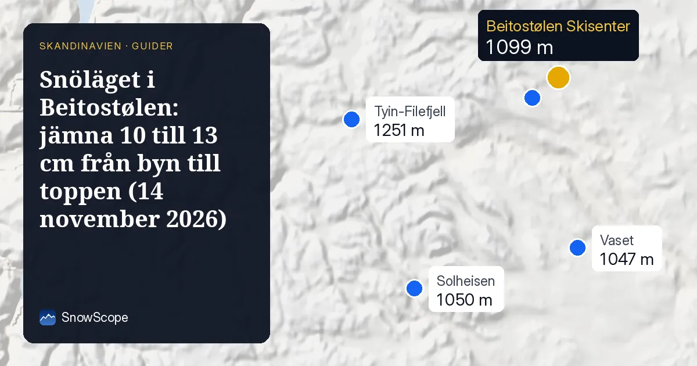

Snöläget i Beitostølen: jämna 10 till 13 cm från byn till toppen (14 november 2026)
Beitostølen ligger högt, och det märks. Norges nationella snökarta uppskattar jämna 10 till 13 cm snö överallt, från 677 m nere i dalen till 1 177 m ovanför liftarna. Själva byn ligger på ungefär 900 m, och därför hör den oftast till de första platserna i södra Norge som får en vit november. Väderstationen i själva Beitostølen, på 965 m, mätte 12 cm på morgonen den 13 november, vilket stämmer med kartan.
Se snöprognosen för Beitostølen Skisenter live i SnowScope-appenSnödjup, pudervarningar och 3D-kartan, gratis.

I dag: tunt men överallt
Vi uppskattar att det har kommit ungefär 9 cm nysnö de senaste sju dagarna. Eftersom hela skidområdet ligger mellan 901 och 1 099 m är skillnaden mellan dalstation och topp nästan ingen; det är samma tunna lager överallt.
Som jämförelse ger våra 46 tidigare vintrar 35 cm i dalen och 46 cm på toppen som normalt snödjup den 14 november. Beitostølen ligger alltså klart under det normala för datumet.

Veckan som kommer blir kall
Vi räknar med ungefär 10 cm de kommande sju dagarna, lika mycket på alla höjder. Andra prognoser ligger mellan 11 och 40 cm. Det fina finns i detaljerna: ingen av dem ger regn på den här höjden, och snögränsen ligger kvar runt 500 m, långt under byn.
Det som faller blir alltså liggande. Kalla nätter hjälper också till med snötillverkningen i backarna.
Så byggs säsongen upp
En normal vinter får toppen sin första bestående snö runt den 3 oktober och dalen runt den 8 oktober, och sedan förblir toppen vit i ungefär 252 dagar. Den 30 november är det normala snödjupet 53 cm i dalen och 63 cm på toppen; den 15 december 66 och 76 cm.
Även de snöfattiga vintrarna är inte så snöfattiga här: det minsta maxdjupet på toppen under 46 vintrar var 97 cm. Men historiken visar också en långsam nedgång: det typiska maxdjupet på toppen var 161 cm under de första 15 vintrarna och 149 cm under de senaste 15.
Har Beitostølen öppnat?
Liftarna i alpinbackarna står still, och vi har inte hittat något öppningsdatum på någon officiell sida. Längdåkningen är en annan sak: det lokala turistkontoret rapporterade den 13 november att pistmaskinen hade varit ute i terrängen för första gången den här säsongen.
Tips för skidåkare
- Beitostølen är känt för tidig längdåkning; kolla den officiella spårrapporten innan du packar klassiska skidor eller skateskidor.
- På 900 m och högre är novemberdagarna korta och kalla: ta med lager på lager även om prognosen ser mild ut i Oslo.
- På kalfjället ovanför byn kan låga moln dölja ledmarkeringarna. Håll dig till markerade leder när sikten är dålig.
Fler kartor (externa webbplatser)
Referenser och källor
- seNorge, Norges nationella snökarta (NVE och MET Norway), öppna data under NLOD-licensen www.senorge.no/
- Visit Beitostølen, officiell destinationssida (spårrapporter), läst 2026-11-13 www.visitbeitostolen.no/
- Varsom, lavinvarningar för Norge www.varsom.no/
- MET Norway, stationsobservationer (CC BY 4.0), dagliga rapporter som de publiceras av Ogimet www.ogimet.com/
Om siffrorna
Uppmätt snö: morgonavläsningar den 13 november 2026 vid de officiella väderstationerna i Sverige (SMHI öppna data), Finland (FMI öppna data, CC BY 4.0) och Norge (MET Norways stationsrapporter, CC BY 4.0, publicerade av Ogimet). Norges nationella snökarta seNorge (NVE och MET Norway, NLOD) ger uppskattningarna på ett rutnät om 1 km för backarna. Öppningsdatum: anläggningarnas egna sidor, lästa den 13 november 2026. Pistlängd och antal liftar: kartläggning i OpenSkiMap.
Officiella lavinprognoser: Varsom (NVE)
Citera den här rapporten
För forskning, undervisning eller press: siffrorna och diagrammen får återanvändas fritt under CC BY 4.0 med den här källhänvisningen.
SnowScope (2026), Snöläget i Beitostølen: jämna 10 till 13 cm från byn till toppen (14 november 2026), https://snowscope.app/blog/sv/2026/11/beitostolen-snow-conditions-14-november-2026.html, hämtad 2026-11-14
SnowScope (Atlas Labs). (2026, November 14). Snöläget i Beitostølen: jämna 10 till 13 cm från byn till toppen (14 november 2026). SnowScope snow reports. https://snowscope.app/blog/sv/2026/11/beitostolen-snow-conditions-14-november-2026.html
BibTeX
@misc{snowscope2026beitostolensnowcondition,
author = {{SnowScope (Atlas Labs)}},
title = {Snöläget i Beitostølen: jämna 10 till 13 cm från byn till toppen (14 november 2026)},
year = {2026},
month = nov,
howpublished = {\url{https://snowscope.app/blog/sv/2026/11/beitostolen-snow-conditions-14-november-2026.html}},
note = {Published 2026-11-14 20:49 UTC; accessed 2026-11-14}
}· CC BY 4.0 · Metoder, data och verktyg →
Beitostølen Skisenter: snö och temperatur efter höjd, i vinter jämfört med förra (verktyg) →
Följ Beitostølen Skisenter
Gratis: ett meddelande när nysnö är på väg, och prognosen varje morgon.